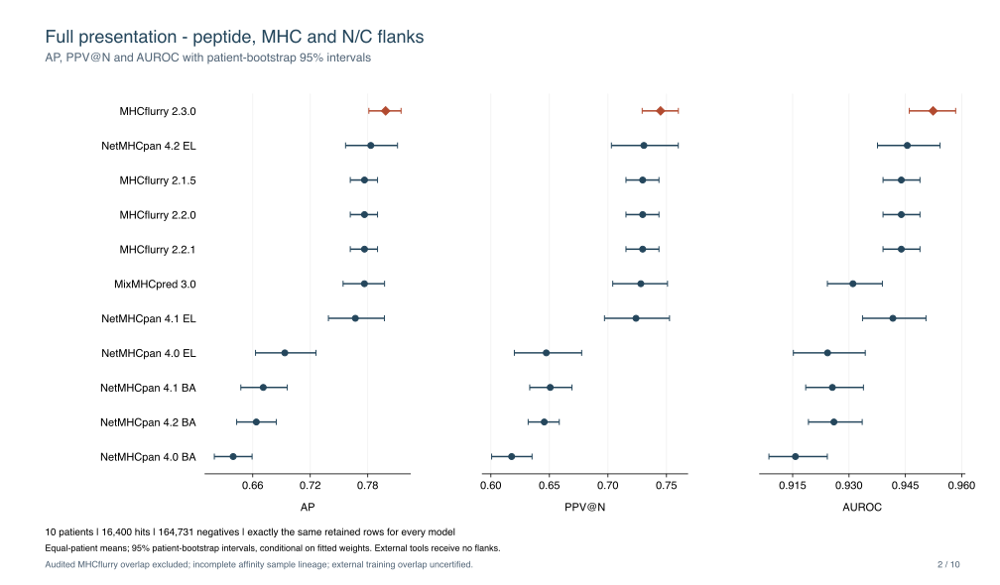
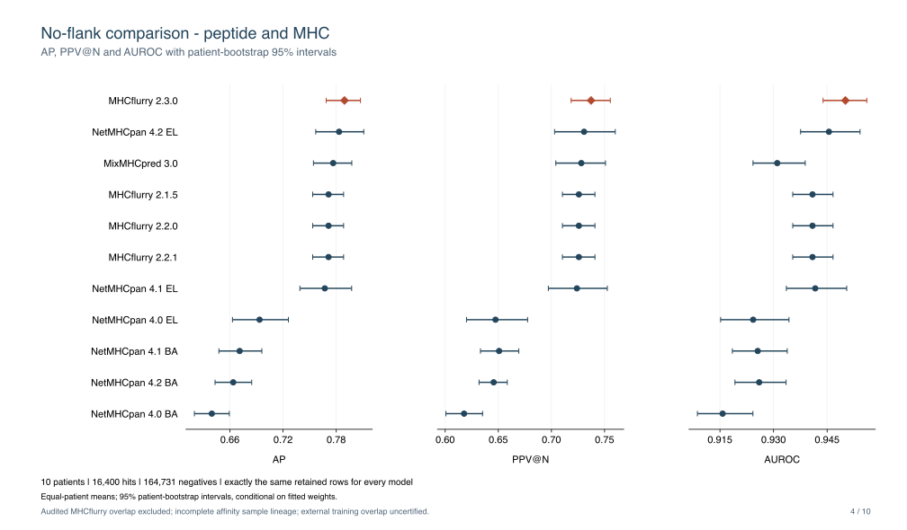

Evaluation of the 2.3.0 weights
MHCflurry 2.3.0 is evaluated on 16,400 positives and 164,731 negatives from ten patients (181,131 rows). Every model receives the same rows and labels; no predictor chooses its own negatives. Values are equal-patient means.
The main comparison uses peptide, MHC alleles and N/C flanking sequences for MHCflurry. A second comparison omits the flanks. NetMHCpan and MixMHCpred receive peptide and MHC inputs in both comparisons; their scores are unchanged. All rows are evaluated against presentation labels. NetMHCpan BA outputs are binding-affinity ranking baselines, not full presentation predictors.
Download the comparison figures (PDF).
Full presentation: peptide, MHC and N/C flanks
MHCflurry uses both N- and C-terminal source-protein context, as it does by default when those inputs are supplied. External tools receive no flanks.

Presentation-label ranking on identical evaluation rows. External tools receive no flanks.
Model / output |
AP |
PPV@N |
AUROC |
|---|---|---|---|
MHCflurry 2.3.0 |
0.7986 |
0.7450 |
0.9524 |
MHCflurry 2.1.5 |
0.7766 |
0.7297 |
0.9439 |
MHCflurry 2.2.0 |
0.7766 |
0.7297 |
0.9439 |
MHCflurry 2.2.1 |
0.7766 |
0.7297 |
0.9439 |
NetMHCpan 4.0 BA |
0.6396 |
0.6178 |
0.9157 |
NetMHCpan 4.0 EL |
0.6935 |
0.6473 |
0.9243 |
NetMHCpan 4.1 BA |
0.6710 |
0.6507 |
0.9256 |
NetMHCpan 4.1 EL |
0.7671 |
0.7240 |
0.9417 |
NetMHCpan 4.2 BA |
0.6637 |
0.6456 |
0.9260 |
NetMHCpan 4.2 EL |
0.7832 |
0.7307 |
0.9455 |
MixMHCpred 3.0 |
0.7765 |
0.7281 |
0.9310 |
The paired 95% patient-bootstrap intervals favor 2.3.0 over public 2.2.1 for all three metrics. AP intervals also favor 2.3.0 over NetMHCpan 4.2 EL and MixMHCpred 3.0, while their PPV@N intervals include zero. The external predictors receive less input context.
No-flank comparison: peptide and MHC
MHCflurry is evaluated without flank inputs. The evaluation rows, labels and external-tool scores are identical to the main comparison.

Presentation-label ranking on identical evaluation rows. External tools receive no flanks.
Model / output |
AP |
PPV@N |
AUROC |
|---|---|---|---|
MHCflurry 2.3.0 |
0.7893 |
0.7373 |
0.9501 |
MHCflurry 2.1.5 |
0.7713 |
0.7258 |
0.9409 |
MHCflurry 2.2.0 |
0.7713 |
0.7258 |
0.9409 |
MHCflurry 2.2.1 |
0.7713 |
0.7258 |
0.9409 |
NetMHCpan 4.0 BA |
0.6396 |
0.6178 |
0.9157 |
NetMHCpan 4.0 EL |
0.6935 |
0.6473 |
0.9243 |
NetMHCpan 4.1 BA |
0.6710 |
0.6507 |
0.9256 |
NetMHCpan 4.1 EL |
0.7671 |
0.7240 |
0.9417 |
NetMHCpan 4.2 BA |
0.6637 |
0.6456 |
0.9260 |
NetMHCpan 4.2 EL |
0.7832 |
0.7307 |
0.9455 |
MixMHCpred 3.0 |
0.7765 |
0.7281 |
0.9310 |
AP and AUROC intervals favor 2.3.0 over public 2.2.1; the PPV@N interval includes zero. AP and PPV@N differences versus NetMHCpan 4.2 EL and MixMHCpred 3.0 also have intervals including zero. These results do not establish universal superiority.
See Detailed comparison of the 2.3.0 weights for the detailed paired-bootstrap tables and component figures. Intervals use 10,000 paired patient resamples and are not adjusted for multiple comparisons.
Cohort and overlap
A separate benchmark builder sampled source-protein/length-matched negative
windows, with seed 20260928 and an initial ten negatives per positive. Sampling
did not use scores from either the old or new predictor. The final overlap
audit removed an additional 380 rows (101 positives and 279 negatives) from
every comparator without resampling. The revised cohort SHA256 is
9f0fbc92fd44ac58438102ae7496687b67f109685d8f1fecfc820a7262bf46cc;
the previous cohort SHA256 was
81d18501616358b3c4b0f87d6e405ed50ea67dfefa31d6f8097d39818d658b41.
The cohort is disjoint from the inventoried MHCflurry training peptide sources. This is peptide-level exclusion: older affinity artifacts lack sufficient provenance to certify whole biological-sample separation across all compared MHCflurry models. External predictors’ training overlap is also uncertified. See Auditing training-sample overlap for the distinction and the conservative audit. Ten patients limit precision and generalizability; the release changed both recipes and data, so its gains cannot be attributed solely to newer data. PPV@N uses the retained positive count in each patient, with expected precision across score ties.
Components and artifacts
Affinity-only ligand-ranking AP increased from 0.6971 to 0.7224 versus public 2.2.1. Processing-only AP decreased: 0.4144 versus 0.5399 with flanks and 0.4243 versus 0.5794 without flanks. These are component rankings on the presentation cohort, not independent quantitative affinity or isolated processing endpoints. The full presentation improvements therefore do not imply that every component improved. Task AP values are never averaged.
The with-flanks predictor contains four short-flank and four cleavage-boundary networks. The separately trained long-flank ensemble is a diagnostic and is not used in that full predictor. The saved presentation-percentile mapping preserves the raw-score AP, PPV@N and AUROC on the complete revised cohort.
Download tables and source data (.tar.gz). The stable-model tables above and the PDF include public 2.1.5/2.2.0/2.2.1, NetMHCpan 4.0/4.1/4.2 BA and EL, and MixMHCpred 3.0. The archive includes full-precision aggregate tables, rendering code, and a separately labeled prerelease component comparison. It does not include MixMHCpred 2.0.2, whose incomplete coverage required a different subset. Model archive checksums accompany the 2.3.0 release.